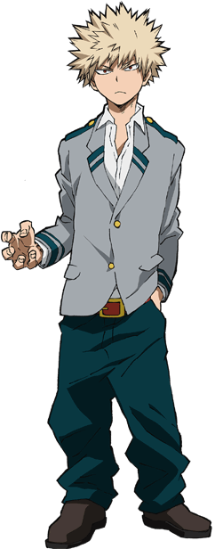

Destruye a los villanos con un super poder transmitido de generación en generación
Tiene dos dones:"congelar" en su lado derecho y "llamas" en su lado izquierdo

Usa una sustancia como nitroglicerina secretada en las palmas de sus manos para crear explosiones